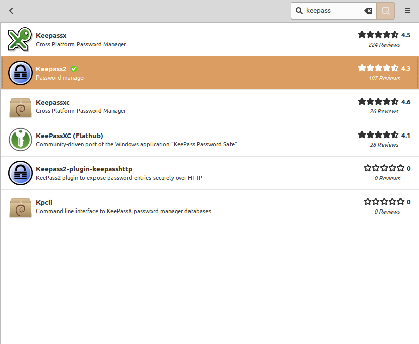
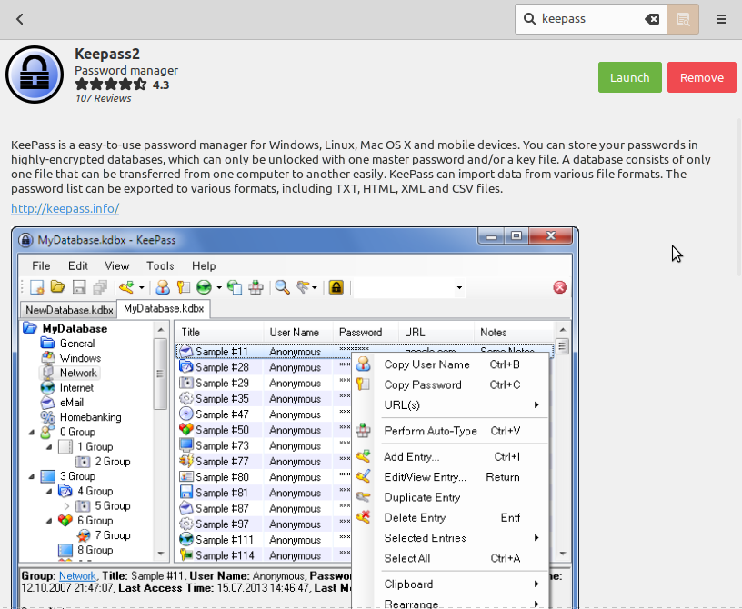
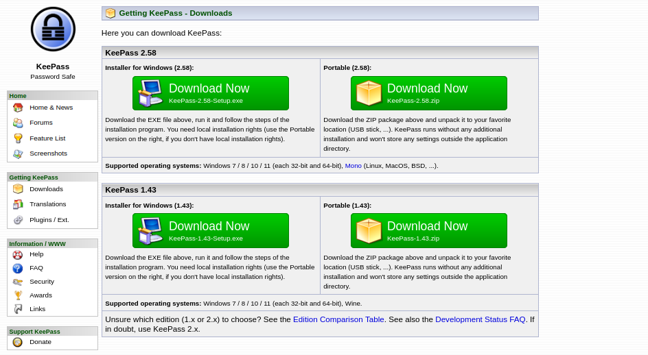
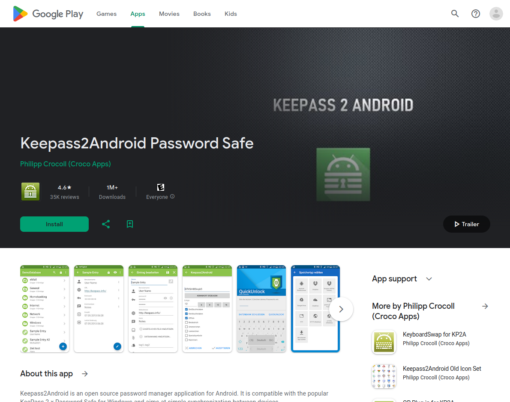

KeePass
La última clave que necesitarás recordar
¿Porqué tenemos claves?
¿No sería más sencillo sin claves?
¿Porqué tenemos claves?
- Llaves de nuestra casa: Solo puede entrar quienes tienen la llave
- Claves son como llaves virtuales
- Pretegemos a nuestra casa virtual con claves:
- El móvil o la computadora
- El homebanking
- Cuentas en redes sociales
- ...
Qué critico son mis cuentas?
¿Que pasaría si mi vecino tendría la clave de mi homebanking?
¿Qué critico son mis cuentas?
-
Medio: Cuentas que no permiten hacer cambios críticos
Pedidos Ya, EdeNor, Coto, ...
-
Alto:
Cuentas que manejan dinero o permiten hacer cambios críticos
Mercadopago, Afip, Anses, ...
¿Qué critico son mis cuentas?
mail, móvil, authenticador, ...
¿Cómo protegemos nuestras cuentas?
¿Sirve la fecha de cumpleaños de mi marido como pin para mi móvil?
¿Anotado protegemos nuestras cuentas?
- Medio: PIN, clave simple
- Alto: Clave + segundo factor
- Crítico: Clave compleja + segundo factor o token de hardware
¿Dónde guardamos todas estas claves?
¿Anotado en un papelito baja el teclado?
¿Dónde guardamos todas estas claves?
- Anotado en un papel en un lugar seguro o en la caja fuerte
- En el llavero del sistema operativo
- En una nube especial para claves
- En un tesoro digital...
...como KeePass
KeePass
¿Cómo instalar KeePass?
Linux: Desde software manager
 ¿Cómo instalar KeePass? 
Windows/Mac: descargar desde keepass.info/download.html (Windows/Mac)
¿Cómo instalar KeePass? 
Android store: keepass2android.keepass2android
¿Cómo sincronizamos claves?
¿En un archivo de texto en Dropbox?
¿Cómo sincronizamos claves?
- ...
Nextcloud
...
¿Cómo instalar Nextcloud?
- ...
Recursos
KeePass
Nextcloud
Letra chica
Esta presentación sobre KeePass
por Tobias Blaser está licenciada
bajo
CC BY-SA 4.0


- Está presentación fue creado con reveal.js
- Las imagenes fueron generado por Imagen 3 en Google Gemini